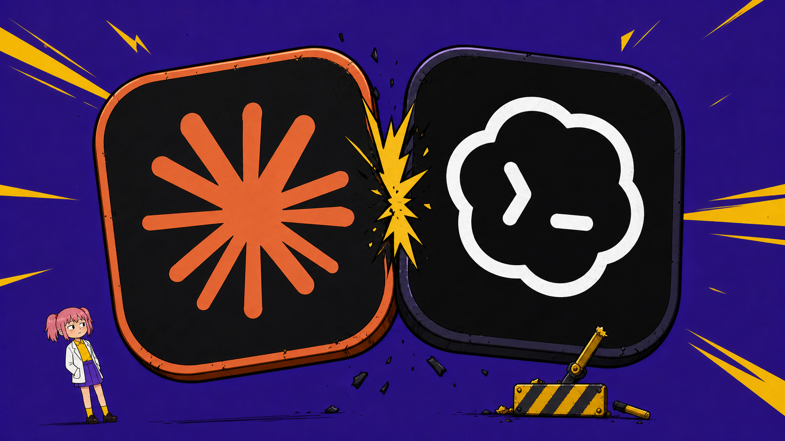
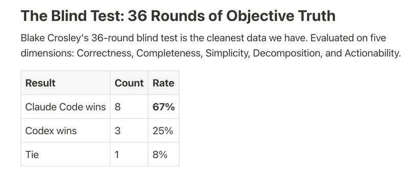
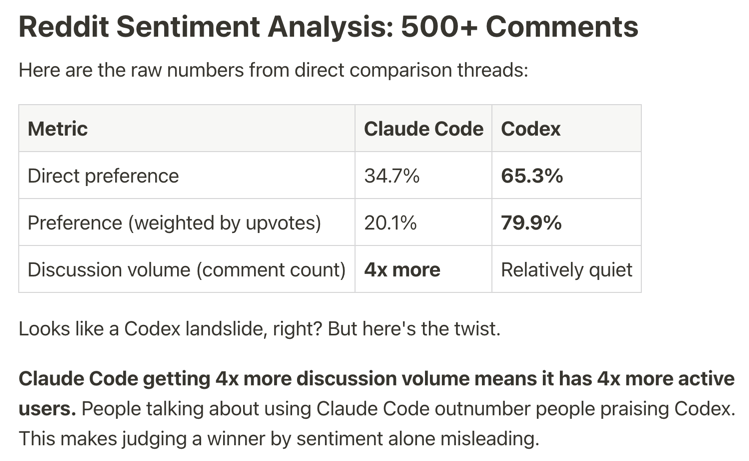
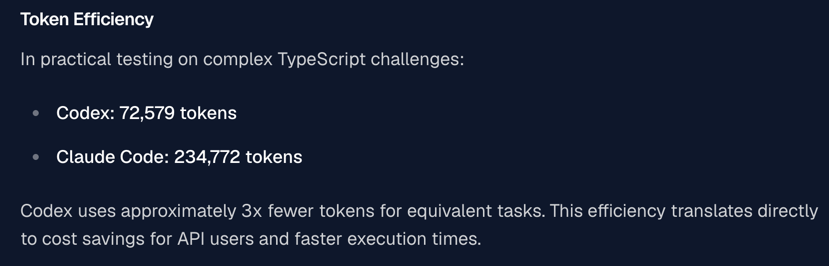
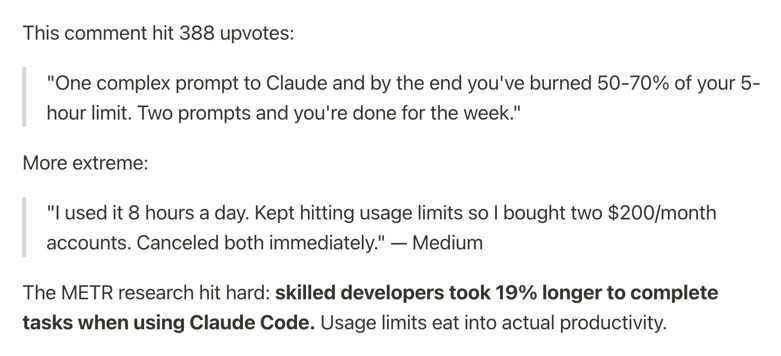
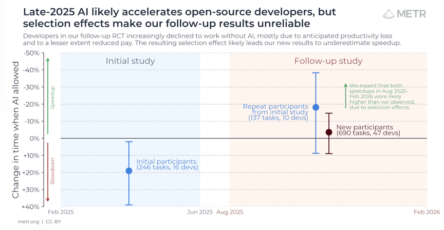
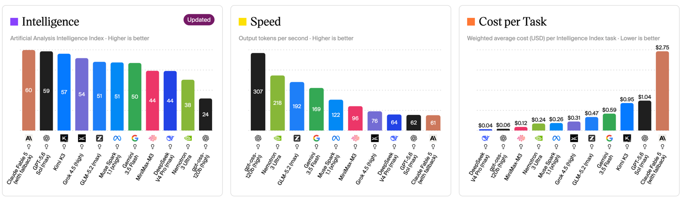
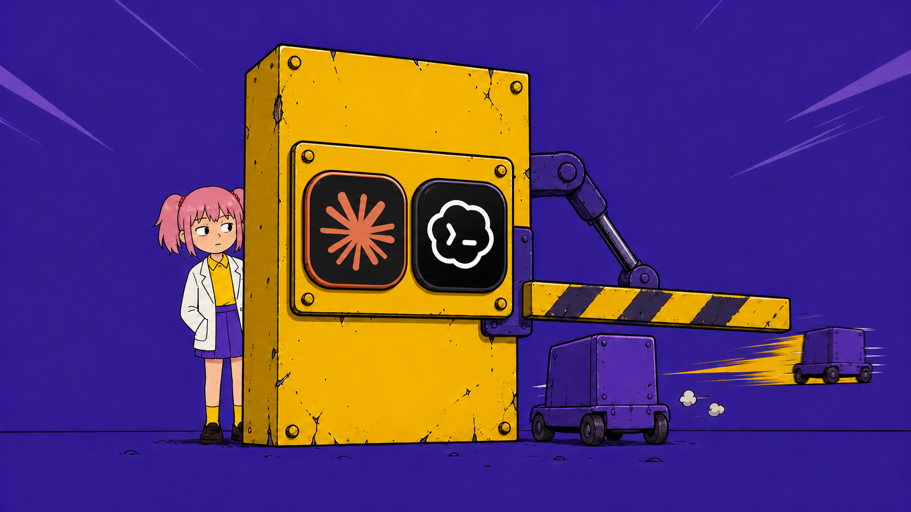

2026 年 AI 编程工具圈最撕裂的一组数据，来自 Reddit 上的一项开发者调查。
从五个维度进行评估，正确性、完整性、简单性、可分解性和可操作性。
36 轮盲测，Claude Code 赢 67%，OpenAI Codex 赢 25%。

但同一个调查问"你实际用哪个"，65.3% 的开发者说 Codex，只有 34.7% 说 Claude Code。
产品更好，用的人更少，我不明白。

GlobalData 2026 年 1 月的声量分析说，Claude Code 占 X 平台编程 Agent 讨论量的 75%，情感高度正面。
口碑、盲测、声量 Claude code 全赢，实装率却是惨败。
但顺着成本往下挖，能挖出一条完整因果链，起点是一个产品交互决策。
第一环，token 消耗。
多个第三方对比测试显示，Codex 完成同一任务约消耗 Claude Code 三分之一到四分之一的 token。
这个差距的根源，埋在两个产品的交互哲学。
Claude Code 的设计是"先理解再动手"，先读项目结构，确认你的意图，再执行。
Codex 的设计是"先行动再迭代"，你定义任务，它直接开干，中间更少向你确认。
每一次"你确定要的是这个吗"，都是一轮额外的上下文携带和推理开销。
确认轮数，直接换算成 token 数。

第二环，额度墙。
Claude Pro 每月 20 美元，提供 5 小时的使用时间窗口。
但像我这种长期使用 Claude code 的穷鬼用户，肯定都知道。听起来够用，实际不是。
一个复杂提示加大型代码库，一次会话就可能烧掉 50% 到 70% 的额度。
Reddit 上有开发者说，同时买两个 200 美元的 Max 账号还是会撞墙。
反观 Codex 绑在 ChatGPT Plus 里，每月 20 美元，一天正常使用，对话，开发，生成图片，基本不撞墙。
更不要提 Codex 还有个重置仙人 Tibo，最近不仅砍掉了五小时限额，还不定期掉落 Reset 礼包。

第三环，用户体感。
2025 年初，METR 曾做随机对照实验，在当时以 Cursor 和 Claude 3.5/3.7 Sonnet 为主的工具条件下，开发者主观认为 AI 让自己更快，实际任务时间却平均增加了19%。
这个结果不能代表今天的 Claude Code，但它至少揭示了一个问题，开发者的“提效感”与真实生产率有时候并不总是一回事。
2026年，METR也承认，随着 Agent 深度进入工作流，传统的单任务计时方法已经越来越难准确测量生产力。
不同的用户场景，对工具带来效率提升的感受完全不同。 更好的模型和架构不是能帮助用户解决问题的充分条件了。

熟悉 SOTA 模型的朋友都知道，Claude 长期霸榜 SWE 榜单。
但其实，顶尖模型之间的差距，往往没有天差地别的，所以才有了日抛型 SOTA 模型的说法。
更不要说，榜单测评中间的水分不少。

如果大家有印象的话，2026 年最流行的 vibe coding 方案，从原教旨主义演变成了"我都要"。
Claude Code 做架构规划和复杂重构，Codex 做快速实现和并行任务，两个 20 美元叠加，总成本 40 美元，效率甚至优于单个 100 美元的方案。
盲测赢 67% 的 Claude code，在这一实际生产中被折算成了"混合方案里的高端组件"。
因果链到此闭环：确认轮数 → token 消耗 → 额度墙 → 用户体感 → 实装率。
Agent 确认深度不是一个体验变量，是一个成本变量。
它顺着 token 消耗一路传导到定价空间，再传导到市场份额。
设计 Agent 的确认策略时，"这里要不要问一句"的决策，应该用定价决策的严肃程度来对待。
多问一次确认，用户的心智负担降一点，但账单厚一点，额度墙近一点。
少问一次确认，产品更便宜、更敢用，但"过度重写"的风险高一点。
Reddit 上对 Codex 最多的抱怨恰恰是它改掉不该改的代码，2026 年 5 月 Codex 工程负责人在 X 上征求反馈，75.3% 的答复是负面的。
没有免费的效率，也没有免费的自由。
你的产品问几次，就值多少钱。
AI不练腿，保持好奇，保持真实。祝你牛逼，也谢谢你看到这里。
